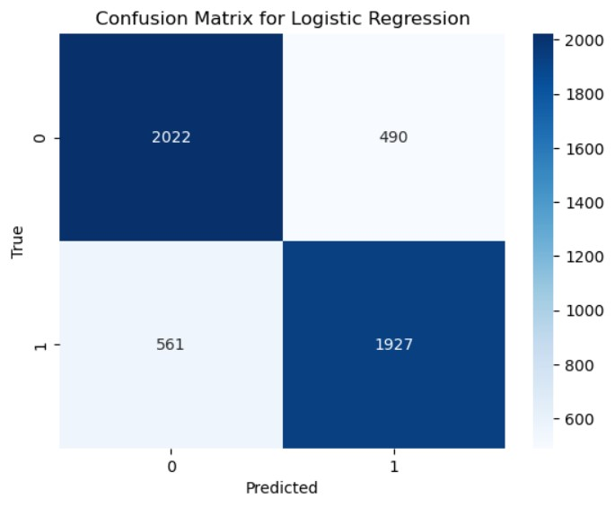
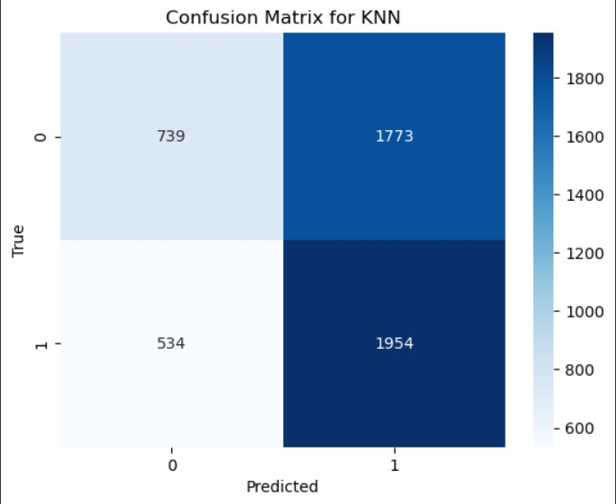
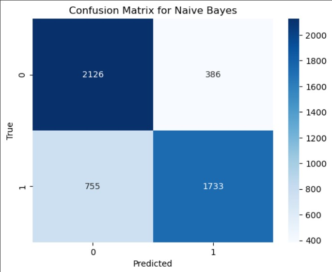
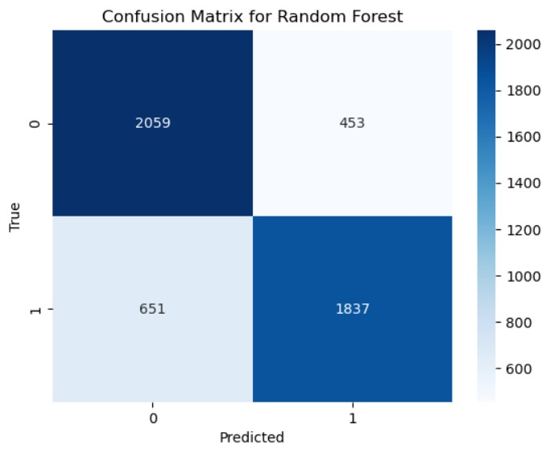

Twitter Sentiment Analysis: Understanding Emotions in Tweets
Analyzing social media sentiment using machine learning and NLP techniques.
📌 Introduction
Sentiment analysis helps us determine whether a given text expresses a positive or negative sentiment. In this project, we used machine learning models to classify tweets as either positive (1) or negative (0). We leveraged Natural Language Processing (NLP) techniques for text preprocessing and machine learning models for classification.
🎯 Key Objectives
- Understand the distribution of positive and negative tweets.
- Perform text preprocessing (removal of stopwords, punctuation, special characters, etc.).
- Build multiple machine learning models and evaluate their performance.
- Visualize results with confusion matrices and accuracy scores.
📊 Dataset Overview
The dataset consists of tweets labeled as positive (1) or negative (0).
- Total Tweets Analyzed: 100,000 (50,000 positive, 50,000 negative)
- Target Variable: Binary classification (0 = Negative, 1 = Positive)
🛠 Text Preprocessing
To improve model performance, we cleaned and transformed the text:
- Converted tweets to lowercase
- Removed stopwords (e.g., "the", "is", "in")
- Removed special characters & punctuation
- Tokenization: Split text into words
- Stemming & Lemmatization: Converted words to their root forms
🔢 Feature Engineering
We used TF-IDF Vectorization to convert text into numerical features for model training.
- TF-IDF (Term Frequency-Inverse Document Frequency) used to weigh important words.
- n-grams (1,2) included to capture context.
- 500,000 features were extracted from tweets.
🚀 Machine Learning Models & Evaluation
We trained multiple models and compared their accuracy:
1️⃣ Logistic Regression
✅ Accuracy: 78.98%
2️⃣ K-Nearest Neighbors (KNN)
✅ Accuracy: 53.86%
3️⃣ Naive Bayes
✅ Accuracy: 77.18%
4️⃣ Random Forest
✅ Accuracy: 77.92%
5️⃣ Support Vector Machine (SVM)
✅ Accuracy: 79.72%
📈 Key Findings
- Support Vector Machine (SVM) achieved the highest accuracy (79.72%), making it the best model.
- Logistic Regression and Random Forest also performed well.
- KNN performed the worst due to its sensitivity to high-dimensional data.
✅ Conclusion & Next Steps
- SVM is the best model for classifying tweets accurately.
- Further improvements can be made by incorporating deep learning models like LSTMs.
- This project showcases the power of NLP & Machine Learning in analyzing social media data.
📜 Want to See the Full Project?
Check out the complete project notebook with code and visualizations.
View Full Project